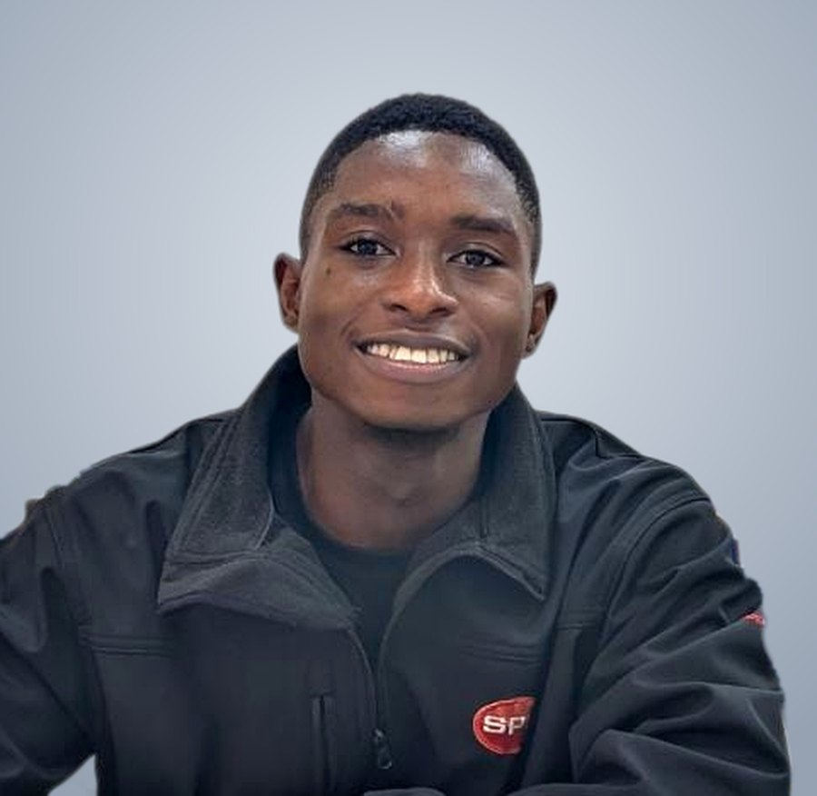

Robotics
Kinematics of parallel mechanisms, mobile robot navigation and dead reckoning.
MSc Mechatronics Engineering · ETH Zürich × Ashesi University
Always ready to Learn, Build and Guide.
I design controllers, test them in simulation and prove them on real hardware. My work spans robotics, control systems, embedded systems, machine learning and energy systems.

About
I'm a mechatronics engineer based in Ghana, studying for an MSc in the joint Ashesi University and ETH Zürich programme. I enjoy the moment a controller leaves the simulation and meets a real machine, because that is where the interesting problems show up.
Most of my research is with the Ashesi Robotics and Control Lab (ARCLab), on iterative learning control, ball-and-plate balancing and inverted-pendulum swing-up.
Outside the lab I build things people use. SimpliGrade, the bilingual report card platform I developed, has run at a secondary school in Cameroon for over two years. FreshKeep, the venture I co-founded, is working on affordable cold storage for smallholder farmers in Ghana.
I care about how people learn, too. On the Ashesi Student Council Academic Committee I write guidance for students on using AI tools ethically and well, and I'm teaching a hands-on electronics workshop for undergraduate and graduate students.
Focus areas
Five areas that keep showing up in my research, coursework and projects.
Kinematics of parallel mechanisms, mobile robot navigation and dead reckoning.
PID, norm-optimal iterative learning control, swing-up and state-space design.
C on microcontrollers, serial communication, sensors and camera-based feedback.
Sequence models for prognostics and data-driven tools for controller design.
Hybrid powertrain energy management, refrigeration for the cold chain and energy economics.
Research
Work carried from simulation through to physical experiments.

A hardware study on a three-servo ball-and-plate platform with Pixy2 camera feedback. Across 52 logged runs of PD, PID and norm-optimal ILC configurations, it shows how the learning gain norm can predict where the system stops being stable, before you run the risky experiment.

A team study that designs a swing-up and stabilising controller for an inverted pendulum, then measures how well simulation results carry over to the physical rig.
Projects
From software that schools use every term to controllers running on real hardware.

EdTech · Web platform
A bilingual (English and French) report card platform for Cameroonian schools. It started as an Excel and VBA tool, and I rebuilt it as a web app so it can serve more schools. It has been in use at a secondary school for over two years, automating grading and producing formatted report sheets.

Venture · Co-founder
Affordable cold storage for smallholder farmers in Ghana. We ran market research interviews at Medina and Makola markets and are developing a 1 m³ vapour-compression prototype that holds produce at 8 to 15 °C.

Robotics · Control
A parallel-mechanism platform that balances a ball using camera feedback. I wrote the inverse kinematics in C, tuned closed-loop PID control, and built an interactive 3D visualiser that runs in the browser.

Energy · Optimal control
An Equivalent Consumption Minimisation Strategy (ECMS) controller for a P2 hybrid race car on the Bahrain circuit. Built in Simulink with Hamiltonian minimisation, a PI feedback loop and a bisection search for the equivalence factor.

Machine learning · Prognostics
Predicting how long a jet engine has left before failure, using NASA's C-MAPSS FD001 dataset. I compared MLP, CNN, LSTM and Transformer models, and added checkpointing and early stopping after diagnosing overfitting.

Mobile robotics
Kinematics, dead reckoning and obstacle sensing for a differential-drive robot, with encoder-based P-control to fix straight-line drift and waypoint tracking. I also wrote a Python bundler to work around VEX V5's single-file limit.
Experience
Iterative learning control on a vision-based ball-and-plate system, and inverted-pendulum swing-up from simulation to hardware.
Cold storage for smallholder farmers in Ghana, from market research to prototype design.
Designed and built a bilingual report card platform used by a secondary school in Cameroon.
Writes guidance for students on using AI tools ethically and effectively.
Hands-on sessions for undergraduate and graduate students using Tinkercad, Falstad and Arduino.
Contact
Research collaboration, an engineering role or a project that needs building: I'd be glad to hear from you.